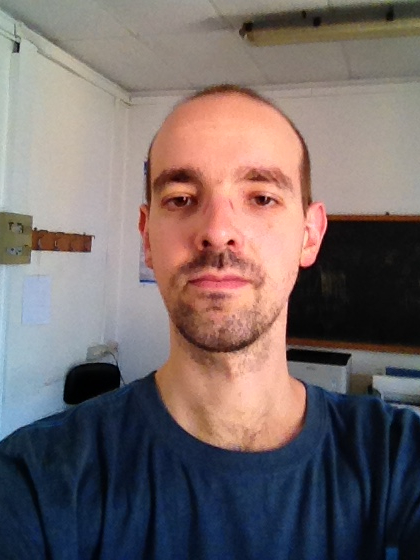

Giacomo Janson |
|

Giacomo Janson is a PhD student in Biochemical Sciences at University of Rome la Sapienza, Italy. He got a bachelor degree in Biological Sciences in 2012 and in 2015 he got a master degree in Genetics and Molecular Biology at la Sapienza. In 2015 he started his PhD in Biochemical Sciences under the supervision of Prof. Alessandro Paiardini. He is specialized in structural bioinformatics and in the use of computational tools to model the structure and interactions of proteins. He is the main developer of PyMod 2.0, an open source plugin of PyMOL written in Python and designed to extend the functionalities of the popular molecular graphics system by interfacing it with a series of third-party bioinformatics tools (such as PSI-BLAST, Clustal Omega, MUSCLE, PSIPRED, and MODELLER).
|